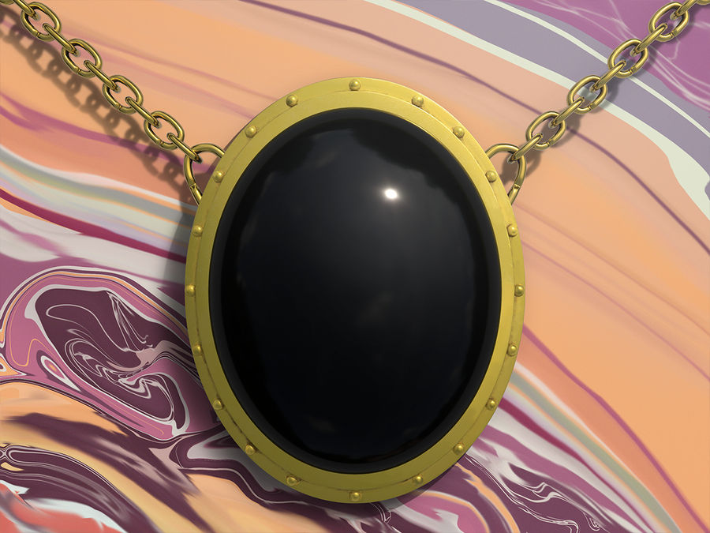

Mox Jet
Mox Jet offre un mana noir supplémentaire. Le mana noir est associé à des sorts puissants et parfois autodestructeurs, rendant Mox Jet particulièrement utile dans les stratégies centrées autour de sorts puissants et agressifs. La carte est représentée par un jet noir, évoquant la mystique et la puissance sombre associée à la couleur noire dans le jeu.